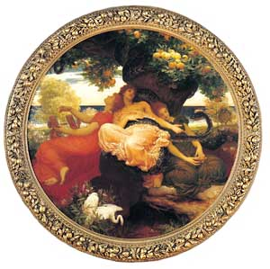

Listen to 'Hesperides' in English

X-1 HESPERIDES
Ce n'est pas le pays des automnes. Les fleurs
Figent en écrins stricts les parfums, les passages.
Une tempête bat et meurt où plantent leurs
Assises les surgeons nourris de sèves sages.
Mais savez-vous le poids qui double vos essors,
Reflets d'un plus profond dont vous vous dîtes frère?
Bosquets creux, hébergez la nuit qui germe en ors!
Je connaîtrai le mot à ma tige contraire.
Sous un lisse combat atteindre le rubis
Et savoir que nos jours bombent leurs écrouelles!
Tourbillons, rejetez la chair et ses habits.
Abîmes, vos parfums! Firmaments, vos rouelles!
Michel Galiana (c) 1990
X-1 HESPERIDES
This is not the abode of Autumn. Here the flowers
Fix in tight caskets the perfumes, the passages.
A storm rises and dies where shoots, nursed with wise
Saps, have taken their stand near the blooming bowers.
But do you know the weight that doubles your soaring,
Shade of a deeper realm to which you are akin?
Hollow copses, shelter the night that sprouts in gold!
I shall know the word opposed to my own stem.
Beneath a smooth struggle, to reach the ruby stone,
And to know that our numbered days do swell their sores.
Whirlwinds, cast off the flesh! Carnal attire begone!
Abysses, your perfumes! Heavens, your spinning stars!
Transl. Christian Souchon 01.01.2004 (c) (r) All rights reserved
In mythology the Garden of the Hesperides was Hera’s orchard, where golden apples grew, tended to by nymphs whose name means “daughters of the sunset”.
Michel uses it as an allegory of poetry which preserves what is ephemeral, calms down passions and whose work is perfected and crowned by death.
But the poems X-1 to X-4 may possibly refer to a mysterious other world having links to our visible world according to the creed of some Islamic sects.
Listen to 'Hesperides' in English